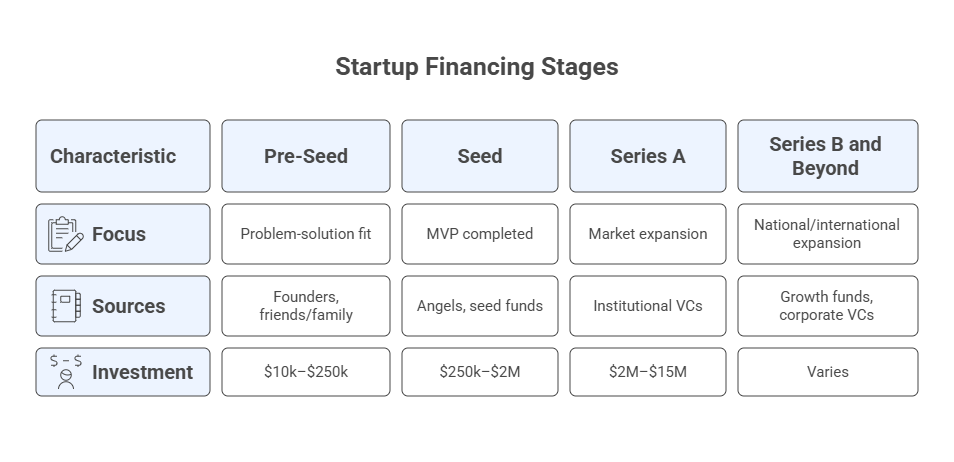

Module 3: Business Model & Planning with AI#
Blueprint Piece: Business Model Canvas
Module Overview#
Block |
Topic |
|---|---|
Workspace warm-up |
Feed Blueprint Pieces 1 & 2 + re-brief AI cofounder |
3.1 |
Lean Startup Essentials |
3.2 |
Business Model Canvas with AI |
3.3 |
Legal Essentials for AI Founders |
3.4 |
The Funding Landscape |
📋 |
Blueprint Checkpoint 3: Business Model Canvas |
Workspace Warm-Up#
Before starting this module, open your AI Cofounder Workspace and paste in your Customer Persona + Value Proposition Canvas from Module 2 (in addition to the Strategic Positioning Statement already there). Then send:
Reference Prompt:
I have now shared both my Strategic Positioning Statement and my Customer Persona +
Value Proposition Canvas with you. Today we are designing the business model, how the
company creates, delivers, and captures value. Given everything you know about my
company, what do you see as the single most important business model decision I need
to get right, and why?
3.1 Lean Startup Essentials#
The Lean Startup methodology, developed by Eric Ries, offers the most widely adopted framework for building a new company under conditions of extreme uncertainty. Its core insight is deceptively simple: a startup’s business plan is not a plan, it is a collection of hypotheses. The job of the early-stage founder is to test those hypotheses as quickly and cheaply as possible, before committing significant resources to building the wrong thing.
3.1.1 The Build-Measure-Learn Loop#
The engine of the Lean Startup is the Build-Measure-Learn feedback loop:
Build: Create the minimum artifact needed to test your hypothesis. This could be a landing page, a paper prototype, a manual process, or a very limited feature set.
Measure: Collect data on how real (or potential) customers respond to it.
Learn: Decide whether to persevere (you were right -> build more) or pivot (you were wrong -> change your hypothesis).
The goal is to minimize the time through each loop. The faster you learn, the faster you can converge on something customers actually want.
Use B–M–L to validate both the Value hypothesis (“do users get value?”) and the Growth hypothesis (“how do new users find it?”).
3.1.2 Validated Learning#
Validated learning is the unit of progress in the Lean Startup, not features shipped, not code written, not slides produced. A startup makes progress when it learns something true about its customers and market, backed by real-world evidence.
What counts as validated learning:
A customer paid for something (even a prototype or a waitlist deposit)
A defined metric moved in the predicted direction after a specific change
A customer discovery interview revealed a pattern that contradicts your assumptions (negative validated learning is still learning)
What does not count:
Positive responses in a survey (“Yes, I’d probably use that”)
Compliments from friends, family, or advisors who are not the target customer
AI-generated enthusiasm (your AI cofounder tells you the idea is great)
3.1.3 MVP Thinking for Non-Technical Founders#
A Minimum Viable Product (MVP) is not a stripped-down version of your full product. It is the smallest possible artifact that allows you to test your most critical hypothesis with real customers and generate validated learning.
For non-technical founders, MVP options include:
MVP Type |
Description |
Example |
|---|---|---|
Concierge MVP |
Deliver the service manually before building automation |
A “smart” scheduling tool that is actually a human scheduler |
Landing Page MVP |
A single page describing the product to measure interest |
Measure signups before building anything |
Wizard of Oz MVP |
The customer sees a product; behind the scenes it is manual |
Zappos shipped shoes manually before building their platform |
Prototype MVP |
A clickable mockup or demo to test UX and concept |
Built in Figma, Gamma, or even PowerPoint |
AI-Powered Demo MVP |
Use GenAI to simulate a feature before building it |
Demo a personalized report by generating it live with AI |
Reference Prompt:
Based on my company concept and the key assumptions in my Strategic Positioning
Statement, identify my three riskiest assumptions, the ones where being wrong would
most threaten the viability of the business. For each assumption, suggest the smallest
possible MVP I could build to test it within 30 days, and describe what validated
learning would look like (what result would tell me the assumption is correct?).
3.2 Business Model Canvas with AI#
The Business Model Canvas (BMC), developed by Alexander Osterwalder and Yves Pigneur, is the most widely used tool in startup strategy. It maps how a company creates, delivers, and captures value in nine interconnected blocks, on a single page.
The BMC is not a static document. It is a hypothesis map, in which every block is an assumption to be tested, validated, and iterated. AI is particularly powerful here because it can help you explore multiple model variants rapidly, stress-test assumptions, and identify interdependencies you might miss.
The Nine Blocks of the BMC#
The canvas is organized into three zones:
Desirability (why customers want it):
Customer Segments (CS)
Value Propositions (VP)
Customer Relationships (CR)
Channels (CH)
Viability (how you make money):
Revenue Streams (R$)
Cost Structure (C$)
Feasibility (how you build and deliver it):
Key Resources (KR)
Key Activities (KA)
Key Partnerships (KP)
Download the BMC: Business Model Canvas.
Online services that allow you to create your BMC:
Strategizer: https://www.strategyzer.com/library/the-business-model-canvas.
Canvanizer: https://canvanizer.com/.
Block 1: Customer Segments (CS)#
Definition: The specific groups of people or organizations you create value for.
Key question: Who are we actually building this for and are they all the same, or are there distinct segments with different needs?
You developed your primary customer persona in Module 2. Use it here, and consider whether there are secondary segments worth capturing in the BMC.
Reference Prompt:
Based on my customer persona and value proposition, identify whether I have one primary
customer segment or multiple distinct segments. If multiple, describe each one briefly
and explain how their needs differ. Recommend how I should prioritize them in the
early stage.
Block 2: Value Proposition (VP)#
Definition: The bundle of products and services that creates value for a specific customer segment, addressing pains, generating gains, or enabling customer jobs.
Key question: What specific combination of features, outcomes, and experiences makes our offer genuinely valuable?
Your VP was already developed in Session 2 via the Value Proposition Canvas. Bring it into the BMC here and refine it in light of feasibility and viability considerations.
Block 3: Channels (CH)#
Definition: How you reach and deliver value to your customer segments, including awareness, evaluation, purchase, delivery, and after-sales support.
Channel types:
Owned: Your website, app, direct sales team, email list.
Partnered: Distributors, affiliate networks, platform marketplaces (App Store, etc.).
AI-enhanced: Chatbots for customer service, automated onboarding, personalized recommendation engines.
Reference Prompt:
Suggest the most effective channel mix for reaching my primary customer segment in
the early stage of the company. For each recommended channel:
1. Explain why it fits this specific customer type.
2. Estimate how expensive and how fast it is to activate.
3. Identify one AI tool or workflow that could make this channel more efficient.
Block 4: Customer Relationships (CR)#
Definition: The type of relationship you establish and maintain with each customer segment, from fully automated to deeply personal.
Relationship types for AI-based companies:
Type |
Description |
AI Application |
|---|---|---|
Self-service |
Customer helps themselves via tools and documentation |
AI-powered knowledge base, chatbot support |
Automated |
Fully automated, personalized interactions at scale |
Recommendation engines, triggered messaging |
Community |
Customer-to-customer interactions |
AI-moderated forums, peer matching |
Co-creation |
Customers contribute to value creation |
AI tools that learn from user behavior |
Dedicated personal |
High-touch human relationships |
AI-assisted account managers |
Block 5: Revenue Streams (R$)#
Definition: How the company generates cash from each customer segment; the pricing mechanisms and revenue models that sustain the business.
Common revenue models for AI-enabled startups:
Model |
Description |
Example |
|---|---|---|
Subscription (SaaS) |
Recurring fee for ongoing access |
$49/month per user |
Usage-based |
Pay per use or per unit of AI consumption |
Per API call, per report generated |
Freemium |
Free core + paid premium features |
Free tier + Pro at $19/month |
Transaction fee |
Percentage of each transaction facilitated |
2.5% per sale processed |
Licensing |
License the technology to other businesses |
White-label AI model |
Data monetization |
Monetize aggregated, anonymized insights |
Sell market intelligence reports |
Professional services |
Consulting, onboarding, custom implementation |
$5,000 setup + monthly retainer |
Reference Prompt:
Recommend three revenue model options for my company, ranked by fit with my customer
segment and business concept. For each option:
1. Describe how it would work in practice for my specific product.
2. Estimate a realistic price range and the reasoning behind it.
3. Identify the main risk or challenge with this model.
Then recommend which model I should pursue first and why.
Block 6: Key Resources (KR)#
Definition: The most important assets required to make the business model work — physical, intellectual, human, or financial.
For AI-based startups, key resources typically include:
Data: Training data, proprietary datasets, customer data with consent.
AI infrastructure: API access (OpenAI, Anthropic, Google), compute resources, fine-tuned models.
Intellectual property: Algorithms, workflows, branded methodologies.
Talent: AI literacy, domain expertise, sales capability.
Customer relationships: A loyal early-adopter base that provides feedback and referrals.
Block 7: Key Activities (KA)#
Definition: The most important actions the company must perform to operate and grow.
Examples for an AI-enabled startup:
Continuous model improvement and prompt optimization.
Customer onboarding and success management.
Data collection, curation, and quality management.
Sales, marketing, and community building.
Regulatory compliance and AI safety monitoring.
Reference Prompt:
Identify the five most critical activities my company must excel at to deliver on the
value proposition and operate the business model. For each activity, identify whether
AI can automate or augment it, and if so, how. Be specific about which AI tools or
workflows are most relevant.
Block 8: Key Partnerships (KP)#
Definition: The network of suppliers and partners that help the business model work.
Partnership types:
Strategic alliances: Non-competitor partners who share resources or distribution.
Technology partners: API providers, cloud platforms, AI model providers.
Channel partners: Distributors, resellers, or platform operators who reach your customer segments.
Data partners: Organizations that provide or co-develop the data your AI depends on.
Reference Prompt:
Identify the three most important partnerships my company should pursue in the first
year. For each partnership:
1. Describe what we need from this partner and what we offer in return.
2. Name two or three specific companies or organizations that could fill this role.
3. Suggest how I would approach initiating this relationship.
Block 9: Cost Structure (C$)#
Definition: The most significant costs involved in operating the business model.
Key distinction:
Fixed costs: Do not vary with volume, such as salaries, office space, software subscriptions.
Variable costs: Scale with activity, such as API costs per query, cloud compute per user, transaction fees.
AI-specific cost drivers: LLM API costs (can be significant at scale), data storage, model training compute, and human-in-the-loop review processes.
Unit economics basics:
The two most important early-stage unit economics metrics are:
Customer Acquisition Cost (CAC): Total sales and marketing spend divided by the number of new customers acquired in that period.
Customer Lifetime Value (LTV): The total revenue a customer generates over their relationship with you.
The fundamental viability test: LTV > CAC (ideally by a factor of 3× or more).
Reference Prompt:
Outline the cost structure for my business model. Identify:
1. The three largest fixed cost categories in year one.
2. The two main variable costs that will scale with revenue.
3. A rough estimate of my Customer Acquisition Cost (CAC) based on the channels we
discussed, and what I would need my average customer to spend annually to achieve
a healthy LTV/CAC ratio.
Be explicit about your assumptions.
Full Canvas Assembly#
Reference Prompt:
Assemble everything we have discussed into a complete Business Model Canvas summary.
Present it in a 3×3 grid format with the nine blocks. After the canvas, provide a
"Canvas Consistency Check", that is, identify any blocks where the assumptions conflict with
each other, and flag the one assumption in the entire canvas you consider most risky
and most in need of validation.
3.3 Legal Essentials for AI Founders#
Legal considerations are often deferred by early-stage founders, usually until they become urgent. In the AI space, deferring certain legal decisions can create serious structural problems later. This section provides a focused overview of what founders need to understand from day one.
Note: The following is educational information, not legal advice. Always consult a qualified attorney for decisions specific to your company.
3.3.1 Startup Legal Structures#
The most common legal structures for US-based startups, and their key trade-offs:
Structure |
Liability Protection |
Investor Suitability |
Tax Treatment |
Best For |
|---|---|---|---|---|
Sole Proprietorship |
None |
Not suitable |
Pass-through |
Pre-incorporation testing only |
LLC |
Yes |
Limited |
Pass-through (flexible) |
Early stage, solo or small team |
C-Corporation |
Yes |
Ideal (VC-ready) |
Double taxation (offset by structure) |
VC-funded startups |
S-Corporation |
Yes |
Limited (US investors only) |
Pass-through |
Small business, not VC track |
If you plan to raise venture capital, Delaware C-Corporation is the standard structure. Most VCs require it. If you are bootstrapping or seeking angel investment, an LLC offers more flexibility with less administrative burden.
3.3.2 Intellectual Property for AI Founders#
Intellectual property (IP) protection is especially complex and important for AI companies. Key considerations:
Who owns AI-generated content? Currently, in the US, purely AI-generated outputs without meaningful human creative input cannot be copyrighted. Human authorship of prompts, curation of outputs, and training data selection can establish protectable IP.
Trade secrets vs. patents: Most AI startup IP is protected as trade secrets (the model architecture, training data, and fine-tuning approach) rather than patents, which require public disclosure.
Founder IP assignment: Ensure all founders and early employees sign IP assignment agreements, assigning any company-relevant IP they create to the company.
Open-source dependencies: If your product is built on open-source AI models, understand the license terms (some prohibit commercial use without a license agreement).
3.3.3 Data Privacy and AI Liability#
GDPR (EU) and US State Privacy Laws: If your product collects, processes, or stores personal data, you must comply with applicable privacy laws. AI systems that make automated decisions about individuals face additional scrutiny under GDPR Article 22.
Terms of Service for AI APIs: Review the terms of the AI APIs you rely on. Some prohibit specific use cases (e.g., medical diagnosis, legal advice) or require specific disclosures when AI-generated content is presented to end users.
AI transparency obligations: A growing number of jurisdictions (EU AI Act, US executive orders) require disclosure when users are interacting with AI systems. Build this into your product design from the start.
Reference Prompt:
Based on my company concept, identify the top three legal considerations I should
address before launching. For each one, describe the risk of not addressing it and
suggest the first concrete step I should take to mitigate it. Keep this practical —
I am an early-stage founder, not yet funded.
3.4 The Funding Landscape#
Understanding the funding landscape helps you make better decisions about how to grow, even if you are not currently seeking investment. Knowing what investors look for sharpens your planning discipline and prepares you for future conversations.
Startup Financing Stages#
Stage |
What It Funds |
Typical Sources |
Amount |
|---|---|---|---|
Pre-Seed |
Idea validation, founding team, initial prototype |
Bootstrapping, friends & family, grants |
\(0 – \)250K |
Seed |
MVP development, early customer acquisition, team building |
Angel investors, seed-stage VCs, accelerators |
\(250K – \)3M |
Series A |
Proven model, scaling sales, product expansion |
Venture capital |
\(3M – \)15M |
Series B+ |
Market expansion, team growth, geographic scale |
VC, growth equity |
$15M+ |

Non-Dilutive Funding Options#
Not all early-stage funding requires giving up equity. Non-dilutive sources are often overlooked and highly valuable:
Grants: SBIR/STTR grants (federal, \(150K–\)2M), state innovation grants, foundation grants for social impact ventures.
Business competitions: Many universities and accelerators run competitions with prize money and in-kind support.
Revenue: The simplest non-dilutive capital. Customers who pay before you build the full product (letters of intent, pre-sales, pilots).
Incubators and accelerators: Programs like Y Combinator, Techstars, and university-based accelerators often provide funding, mentorship, and network access in exchange for a small equity stake.
What Early-Stage Investors Look For#
At the seed stage, investors are primarily betting on three things — in roughly this order of importance:
Team: Are these founders uniquely well-suited to solve this problem? Do they have relevant domain expertise, resilience, and coachability?
Problem and market: Is the problem real and painful enough for a large enough group of people to support a significant business?
Early traction: Is there any evidence, even small signals, that real customers care? (Paid pilots, waitlist sign-ups, letters of intent, early revenue.)
Your AI Company Blueprint, when complete, should address all three of these dimensions.
Reference Prompt:
Based on my company concept and the business model we have developed, which funding path
makes most sense for my first 12 months: bootstrapping, angel investment, grants, or a
combination? Walk me through your reasoning. Then suggest one specific non-dilutive
funding opportunity I should investigate for my domain and geography.
📋 Blueprint Checkpoint 3: Business Model Canvas#
At the end of this session, compile the third piece of your AI Company Blueprint. Your Business Model Canvas should include:
Customer Segments: Primary and any secondary segments identified
Value Propositions: Refined from Session 2 + linked to BMC context
Channels: Recommended channel mix with rationale
Customer Relationships: Relationship type and AI enhancement strategy
Revenue Streams: Selected revenue model with pricing rationale
Key Resources: Top 3–5 critical assets
Key Activities: Top 5 critical operational activities
Key Partnerships: Top 3 partnerships with approach notes
Cost Structure: Fixed/variable cost categories + LTV/CAC framing
Canvas Consistency Check: Noted conflicts and riskiest assumption
Update your Workspace by pasting this completed BMC before Session 4.
Refernce Prompt:
You are a strategic editor and business model synthesis specialist.
Your task is to compile previously developed content into a single, coherent
**Business Model Canvas (BMC) + Lean Startup Validation Framework**.
Use the existing materials in this workspace. Do NOT create new ideas unless
something is clearly missing or logically inconsistent with the other blocks.
Your job is to:
- Consolidate content across all 9 BMC blocks
- Remove redundancy and surface-level entries
- Ensure logical consistency and interdependency across blocks
- Standardize tone and structure throughout
- Integrate Lean Startup thinking into the model (not as a separate section,
but embedded in how each block is framed and validated)
- Reflect the role of AI as a co-founder — where applicable, note how AI
tools, capabilities, or processes enable or enhance the business model
If there are minor inconsistencies between blocks, resolve them in the most
logical way. If a block is critically underdeveloped, make a minimal,
reasonable addition and flag it clearly.
SECTION 1 — BUSINESS MODEL CANVAS
Present each block using the structure below. For each block, provide:
- A concise, outcome-oriented description (2–4 bullets)
- A "Lean Lens" note indicating what assumption this block contains and
how it would be tested (one sentence per block)
1. **Customer Segments**
- Who are the specific customers this business is designed to serve?
- Prioritize and distinguish between primary and secondary segments
- Indicate whether the model is B2B, B2C, B2B2C, platform, or other
- Lean Lens: What is the riskiest assumption about who your customer is,
and what is the minimum experiment to validate it?
2. **Value Propositions**
- What value does the business deliver to each customer segment?
- Map each proposition to a specific customer pain or gain from the
Customer Persona developed in Module 2
- Distinguish between functional, emotional, and social value
- Lean Lens: Which value proposition is least validated, and what
would a Minimum Viable Test look like?
3. **Channels**
- How does the business reach its customer segments?
- Cover awareness, evaluation, purchase, delivery, and post-sale stages
- Note which channels are owned, earned, or paid
- Lean Lens: Which channel assumption has the least evidence, and
how could it be tested with minimal investment?
4. **Customer Relationships**
- What type of relationship does the business establish with each segment?
- (e.g., self-service, community, dedicated support, co-creation,
automated personalization)
- Note how AI enables or scales these relationships
- Lean Lens: What is assumed about customer retention or engagement
that still requires validation?
5. **Revenue Streams**
- How does the business generate revenue from each customer segment?
- Specify pricing model (subscription, usage, licensing, transaction, etc.)
- Identify primary vs. secondary revenue streams
- Lean Lens: What is assumed about willingness to pay, and what
experiment could test it quickly?
6. **Key Resources**
- What assets are essential for this business model to function?
- Categorize as: physical, intellectual, human, or financial
- Explicitly identify AI or data assets that function as strategic
resources (treat these as co-founder-level inputs where relevant)
- Lean Lens: Which key resource represents the highest dependency risk?
7. **Key Activities**
- What critical activities must the business perform to deliver its value?
- Categorize as: production, problem-solving, or platform/network
- Identify where AI augments or automates core activities
- Lean Lens: Which activity is most operationally untested at this stage?
8. **Key Partners**
- Who are the critical partners or suppliers the business relies on?
- Distinguish between: optimization partnerships, risk-reduction
alliances, and resource/capability acquisition
- Include AI platforms, data providers, or technology partners
where they are structurally essential
- Lean Lens: Which partnership is assumed but not yet confirmed?
9. **Cost Structure**
- What are the most significant costs inherent in this business model?
- Categorize as fixed vs. variable
- Identify value-driven vs. cost-driven priorities
- Note where AI reduces structural costs or shifts the cost model
- Lean Lens: What cost assumption is most sensitive to scale?
SECTION 2 — LEAN STARTUP VALIDATION FRAMEWORK
Present this section in three parts.
A. BUILD-MEASURE-LEARN LOOP SUMMARY
10. **Current Stage Assessment**
- Where is this business in the BML cycle?
(Idea → Build → Measure → Learn → Iterate or Pivot)
- What has already been learned from customer discovery (Module 2)?
- What remains most uncertain heading into the build phase?
11. **Minimum Viable Product (MVP) Definition**
- What is the simplest version of the product or service that can
generate validated learning?
- Specify the MVP type: (e.g., landing page, concierge, prototype,
Wizard of Oz, pilot, explainer video)
- Define the one primary question the MVP is designed to answer
- Identify the 1–2 metrics that will indicate success or failure
B. RISKIEST ASSUMPTION TRACKER
12. **Top 3 Critical Assumptions**
List and rank by risk level (1 = highest):
- State each assumption clearly
- Identify which BMC block it belongs to
- Propose a lightweight test or experiment to validate it
- Define the threshold for "validated" vs. "invalidated"
C. PIVOT OR PERSEVERE FRAMEWORK
13. **Pivot Triggers**
- Under what conditions should the business consider a pivot?
- Identify which BMC blocks are most susceptible to pivot-forcing
discoveries (e.g., customer segment, value proposition, revenue model)
- Name one plausible pivot variant for the highest-risk assumption
SECTION 3 — BUSINESS MODEL COHERENCE ASSESSMENT
14. **Internal Fit Analysis**
- Are the 9 blocks logically consistent with one another?
- Where are the strongest alignments? (e.g., value proposition
to customer segment; key activities to key resources)
- Where are the weakest links or potential contradictions?
15. **Strategic Differentiation Statement**
Synthesize into one sentence using this exact format:
"[Company] creates value for [customer segment] by [key activity or
capability] in a way that [competitors or alternatives] cannot easily
replicate, because [source of defensibility]."
16. **AI Co-Founder Integration Summary**
In 2–3 bullets, describe how AI functions not just as a tool but as a
structural element of this business model — identifying where it shapes
the value proposition, enables key activities, or creates competitive
advantage.
QUALITY REQUIREMENTS
- Every BMC block must connect logically to at least one other block
- Value Propositions must trace directly to Customer Segments and to the
Persona developed in Module 2
- Avoid vague entries (e.g., "social media" is not a channel; name the
platform, method, and stage)
- Lean Lens notes must be specific and actionable, not generic
- AI integration must be substantive — avoid token references ("we'll use AI
to improve efficiency")
- Maintain an investor-ready tone: precise, concrete, and hypothesis-driven
OUTPUT FORMAT
Use clear section headings and structured formatting (bullets or tables where appropriate).
Do not explain your reasoning — provide only the final compiled document and save it in a DOCX file.
⚙️ CW 3.1 — Business Model Canvas Build#
Instructions:
Work through each of the nine BMC blocks using the workspace prompts in section 3.2.
For each block, generate an AI draft and then refine it — push back on at least one output you disagree with and explain why.
Use the Full Canvas Assembly prompt to get a complete view and consistency check.
Identify your riskiest assumption and share it with the group with a proposed way to test it.
Time: 40 minutes
Expected output: A completed Business Model Canvas with consistency check (Blueprint Piece 3).
Further Reading#
Osterwalder, A., & Pigneur, Y. (2010). Business Model Generation. Wiley.
Ries, E. (2011). The Lean Startup. Crown Business.
Maurya, A. (2012). Running Lean: Iterate from Plan A to a Plan That Works. O’Reilly.
Wasserman, N. (2013). The Founder’s Dilemmas. Princeton University Press.